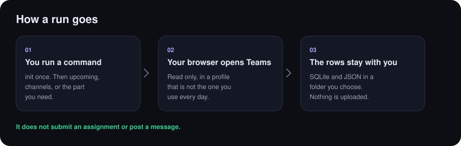
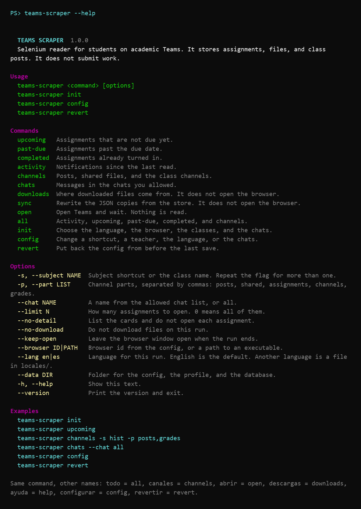
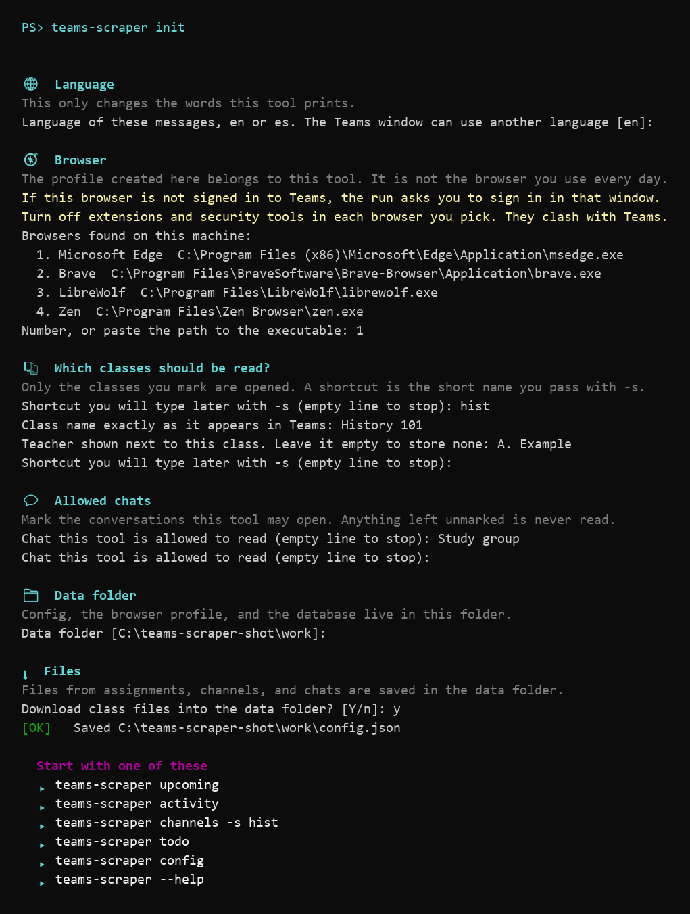
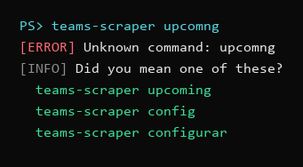

Teams Scraper
It reads your class Teams and keeps the result on your computer. Assignments, files, grades, and posts. It does not turn work in.
If you want it running
pip install teams-scraper
teams-scraper init
teams-scraper upcoming --limit 1init asks for the language, the browser, and which classes to open. The first read takes a single assignment, so you can see what comes back. The walkthrough is in Install and First run.
Browsers

In the window this opens, turn off ad blockers and privacy shields. They fight with Teams.
How a run goes

What it does
It is for class Teams: the assignments, grades, channels, and files a student already has.
- Reads Upcoming, Past due, and Completed, then opens each assignment you ask for.
- Saves the class list, channel posts, shared files, and grades when you ask for those parts.
- Keeps a browser profile in your data folder. It does not use your everyday profile.
- Speaks English unless you pass
--lang esor setlanguagein the config. - Stores rows in SQLite. Another project can pass its own store to
run(store=...).
When a run stops
It stops with a stable code, such as config.missing or browser.profile_locked. The sentence changes with the language. The code does not. The list is in Errors. The symptom guide is in When it fails.
What it looks like
The pictures are the program. The class in the examples is made up, and a path under your user folder is covered before the picture is saved.





Built with
| Piece | What it uses |
|---|---|
| Command | teams-scraper |
| Browser | Selenium 4. Chromium for Chrome, Edge, Brave, and Opera. Firefox for Firefox, LibreWolf, and Zen. |
| Store | SQLite in your data folder, or a class you pass in |
| Text | locales/en.json and locales/es.json |
| Errors | TeamsScraperError.code |
Version 1.0.0, 26 November 2026. MIT license. The code is at github.com/notnomoro/teams-scraper.